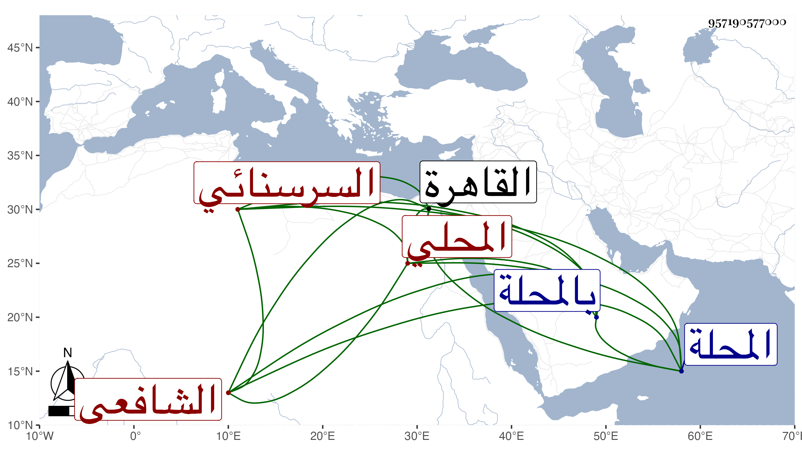

0902Sakhawi.DawLamic.ITO20230111-ara1.EIS1600.957190577000
Biography ID: 957190577000
511
محمد بن محمد بن محمد بن أبي بكر بن علي الشمس أبو عبد الله السرسنائي الأصل المحلي الشافعي ويعرف بابن أبي عبيد وهي كنية جده . ولد في ليلة حادي عشرى رمضان سنة ثلاث وأربعين وثمانمائة بالمحلة ونشأ بها فحفظ القرآن والشاطبيتين التيسير والعنوان ومختصر أبي شجاع والمنهاج وجمع الجوامع والملحة وألفية ابن ملك وعرض على بعض أعيان بلده وتلا بالسبع إفرادا وجمعا على الشهاب بن جليدة والزين جعفر السهنوري وابن أسد وعبد الغني الهيثمي ولم يكمل عليه خاصة وأخذ الفقه وأصوله والفرائض والعربية عن الشمس بن كتيلة وقدم القاهرة فحضر دروس المناوي والعبادي وأبي السعادات البلقيني والجوجري وزكريا في الفقه وعن الثلاثة الأخيرين أخذ في الأصول وعن أبي السعادات في العربية وأخذها معا عن ابن الفالاتي وتميز ولازمني في الحديث رواية ودراية ومما قرأه علي البخاري وجملة من الكتب الستة ، وكتب من تصانيفي القول البديع وغيره وقرأ على عدة منها . وناب في قضاء المحلة عن ابن العجيمي وغيره بل استقل بها وقتا وخطب بعدة أماكن واستقر به ابن الغمري خطيب جامع التوبة الذي أنشأه وسكنه وقرأ الحديث على العامة وترقى فيه وفي الخطابة ونحوهما مع المشاركة في الفضائل وجودة المباحثة والفصاحة والقدرة على التعبير عن مراده وحسن الكتابة والبراعة في الشروط والأحكام بحيث حسده ابن العجيمي فمن دونه ورموه بالتساهل والجرأة في الأحكام والقضايا وتعببسبب ذلك خصوصا في أيام الزيني زكريا بحيث عزله وأعاده عن قرب مع اعترافه بتمام فضيلته ولكنه قال لي أنه سوهائي المحلة وآل أمره إلى أن صودر ورسم عليه بل سجن بالقلعة وغيرها وما نهض للقدر الذي ألزم به وصار بعد ذلك فقيرا وحيدا حتى أنه جلس مع ابن المدني برأس سوق أمير الجيوش وما أنصفه القاضي وكانت بينه وبين أبي البركات الصالحي مناطحات .
